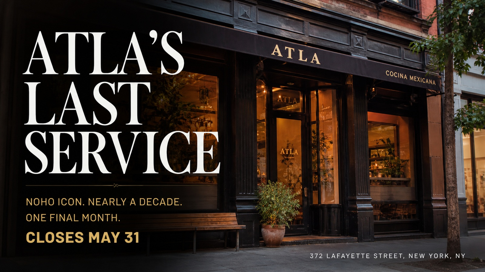

World • Investigation
Cartels Beneath the State
A source-forward investigation into how modern cartels recruit labor, tax local economies, launder money, exploit global demand, corrupt institutions, and govern by fear beneath the state.
Archive
Filter by desk or story type. This page is generated from the master edition file, so a new feature automatically lands here after a rebuild.
World • Investigation
A source-forward investigation into how modern cartels recruit labor, tax local economies, launder money, exploit global demand, corrupt institutions, and govern by fear beneath the state.

Technology • Investigation
AI data centers have moved from cloud strategy into utility-bill math. A new Press analysis of EIA electricity data tracks the fight over megawatts, water, local consent, and who pays when private compute demand lands on public grids.

Science • Investigation
The trade begins with capture and ends with desire. In between are airports, ports, forged permits, encrypted chats, online listings, weak laws, and animals treated as cargo with a heartbeat.

Technology • Investigation
The hard part is no longer whether small aircraft can fly useful missions. It is whether law, air traffic systems, police oversight, war planning and supply chains can see and govern the low-altitude sky now filling up.

Sports • Feature
One month before the biggest men's World Cup ever opens, the story is not only soccer. It is tickets, heat, grass, transit, security, borders, social media, history, and whether North America can make 104 matches feel like one public event.

World • Investigation
Spain's 30-tonne Arconian seizure was the loudest signal yet. The deeper story is demand, trafficking logistics, British consumers, port corruption, public health, violence and enforcement trying to keep up.

World • Analysis
From the Maduro raid to the Iran war, Hormuz, cartel boat strikes, classified AI and the defense factory floor, 2026 shows how U.S. power now moves through operations, logistics and production.

Climate • Feature
Alaska's Tracy Arm megatsunami sent water nearly 1,580 feet up a fjord wall. The real story is the narrow escape: glacier retreat, cruise traffic, seismic whispers, and a warning system built for a slower kind of wave.

Systems • Deep Dive
Refrigerated trucks, warehouses, vaccines, fish, fruit, insulin, power bills, refrigerants, and wasted food are all part of one hidden system: the cold chain.

Memory • Essay
Video games, websites, software, streams, and born-digital culture are disappearing in plain sight, forcing libraries, fans, archivists, companies, and copyright law to decide what the recent past is worth.

Education • Feature
As states and districts restrict student phones, schools are testing whether attention can be rebuilt by policy, culture, storage pouches, enforcement, and trust.

Health • Report
Ventilation, filtration, humidity, CO2 monitoring, wildfire smoke, infectious aerosols, and heat are turning buildings into the front line of everyday public health.

Technology • Analysis
Grid batteries, electric cars, lithium supply chains, virtual power plants, and interconnection queues are turning storage from a gadget story into the shock absorber of the power system.

Science • Explainer
Ocean heat used to sound distant. Now it is visible in coral bleaching alerts, marine heat waves, sea-level records, fisheries stress, stronger rain, and a global observing system that keeps taking the planet's temperature.

Climate • Feature
Wildfire, hurricane, flood, and heat risk are no longer abstract climate charts. They are arriving as premiums, deductibles, cancellations, FAIR Plan growth, and household math.

Sports • Feature
With the WSOP Main Event returning to ESPN for a three-night final table, poker is trying to turn its biggest tournament back into must-watch TV.

Technology • Report
The Pentagon's classified-network AI agreements are not a chatbot story. They are the moment frontier models, cloud infrastructure, and defense power began moving into the same secured room — with Anthropic's empty chair revealing the fight over who controls the guardrails.

Culture • Food Feature
Enrique Olvera’s Atla is closing in NoHo, but the Lafayette Street room is not going dark. The restaurant’s final month is a story about all-day dining, modern Mexican cooking, and the strange tenderness of eating a place before it becomes history.

Technology • Analysis
Elon Musk says OpenAI betrayed its nonprofit mission. OpenAI says Musk wanted control and lost. The court battle is really about whether the most powerful AI company in the world can still claim to serve humanity after becoming one of the richest corporate prizes in technology.

Opinion • Essay
Public statistics are not bureaucratic garnish. They are the information infrastructure that lets a democratic state know its labor markets, neighborhoods, businesses, and population well enough to act without governing by mood.

Culture • Analysis
Streaming still dominates attention, but its business now looks far less like disruption and far more like television: ad tiers, sports, bundles, labor formulas, and arguments over who shares in the success of a hit.

Health • Report
H5N1 remains a low public-health risk for the general public, but it has already redrawn dairy surveillance, farm biosecurity, and the line between agricultural disease control and health preparedness.

World • Analysis
The continent has moved beyond vague seriousness. The next test is whether spending pledges and white papers can become production, movement, and usable deterrence before strategic time runs out.

Education • Analysis
Enrollment finally looks steadier across higher education, but the recovery belongs more to community colleges and public campuses than to the sector as a whole, and the applicant pipeline is widening in ways that still demand better support after admission.

Economics • Report
Mortgage rates are lower than their worst recent highs but still high enough to ration buying. Rents are cooling more slowly than households feel, and the nation’s housing squeeze remains the most intimate version of inflation.

Politics • Analysis
The White House order, the federal form, and the lawsuits that followed reveal a deeper fight: whether federal elections should be organized around documentary gatekeeping or broad presumptive access backed by verification and enforcement.

Science • Report
The launch mattered, but the deeper achievement was operational: human-rated hardware, multinational systems, and a lunar mission that generated evidence rather than nostalgia.

Philosophy • Essay
AI governance keeps reaching for better standards, better tests, and better risk language. None of that removes the need for institutions to judge well in public.

Health • Report
The 2026 measles surge is a reminder that public health depends less on dramatic emergency language than on whether routine vaccination systems still hold.

Education • Report
The next phase of school recovery is less about whether classes reopened and more about whether students are present, focused, and supported often enough for learning to accumulate.

Economics • Analysis
The American economy is still growing, but it is doing so with less exuberance, less labor-market churn, and more dependence on household spending than the public rhetoric admits.

Culture • Feature
Broadway’s record grosses and rising attendance across the arts show that American cultural life is alive again — but not evenly, and not on the same business terms as before.

Technology • Report
Behind the chatbot boom is a slower race over transformers, substations, fabs, and the people who know how to build them.